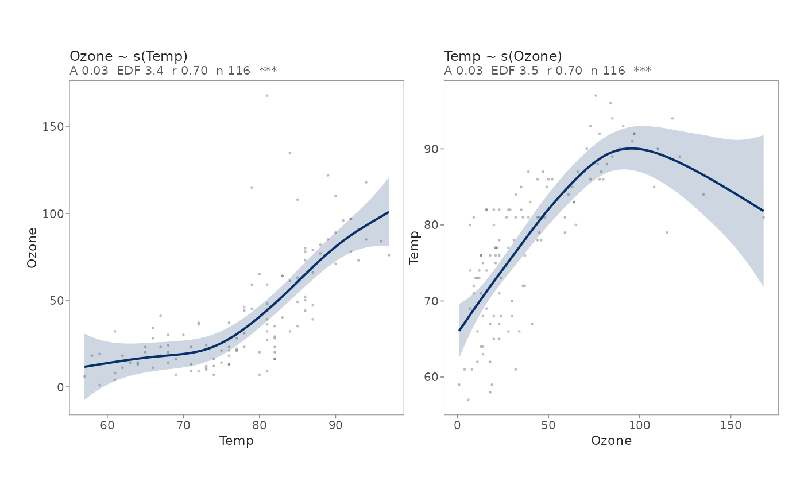

![[Stable]](figures/lifecycle-stable.svg)
Draws the two directional fits of one or more pairs of a
janusplot_fit() object. Each pair is a block of two panels side by
side: y ~ s(x) on the left and x ~ s(y) on the right, each with its
raw points, band, curve, the model formula as the title and a strip
giving the pair's asymmetry index A, the EDF of that direction, the
pair's Pearson correlation r, its significance glyph and the rows
used (annotations picks among them). Nothing is refitted.
Usage
janusplot_pair(
fit,
x,
y,
display = c("fit", "d1", "d2", "both"),
group = NULL,
annotations = NULL,
arrange = c("beside", "stacked"),
nrow = NULL,
ncol = NULL,
style = janusplot_style()
)Arguments
- fit
A
janusplot_fitobject fromjanusplot_fit().- x
Character vector of the predictors of the left panels, each one of
fit$vars; or a data frame or character matrix with two columns, predictor then response, one row per pair, withymissing.- y
Character vector of the responses of the left panels, the same length as
x, elementipaired withx[i]and different from it.- display
What the panels show:
"fit"(the default) the fitted curves over the data,"d1"or"d2"the first or second derivative of each smooth, which need that order infit$settings$derivatives, and"both"the two curves overlaid in one z-score panel.- group
Name of a factor, character or logical column of
fit$datawhose levels colour the raw points, with a legend below the panels, orNULL(the default). Drawing only; the column never enters the model.- annotations
Character vector choosing what the strip of each panel shows under
display = "fit", a subset of theannotationsofplot.janusplot_fit().NULL(the default) isc("A", "edf", "r", "signif", "n");character()writes no strip. The derivative and overlay displays keep their own strips.- arrange
How the two panels of a pair sit:
"beside"(the default) putsy ~ s(x)left ofx ~ s(y),"stacked"puts it above; see Details. The overlay ofdisplay = "both"has one panel per pair and ignores it.- nrow, ncol
Number of pair blocks per stack and number of stacks, or
NULL(the default) to derive them as described in Details. When both are given,nrow * ncolmust cover every pair.- style
A
janusplot_style()object holding every appearance setting.
Value
A patchwork object, which is a
ggplot: the blocks of panels in their stacks, the key of the overlay
colours for display = "both" and the group legend underneath when
group is given.
Details
The left panel of a block always shows y ~ s(x), whichever order the
fit stored the pair in. Titles name the model in the column names of
the data, with the fit's adjust terms appended, for example
Ozone ~ s(Temp) + s(Month, bs = "re"); the curve and band are then
population-level, as in janusplot_fit(). The significance glyph is
read from the adjusted p-value when the fit has p_adjust other than
"none". With style$pair_background = TRUE the panels are tinted by
the pair's Pearson correlation as the matrix background is, with the
same background_palette and background_strength; the default leaves
them plain, since no colour bar is drawn. A fit
with adjust draws no background: its curves are adjusted, while the
correlation is marginal.
Many pairs are laid out as blocks stacked top to bottom, with the
stacks side by side: nrow is the number of blocks per stack and
ncol the number of stacks. Give one and the other follows from the
number of pairs; give neither and up to five pairs form one stack, more
pairs ceiling(n / 5) stacks. Fourteen pairs with nrow = 5L give
stacks of five, five and four blocks; stacks that would stay empty are
dropped. One pair is a single row of two
panels. Every panel shares the text sizes of style$text_size.
arrange = "stacked" turns each block on its side: y ~ s(x) above
x ~ s(y). Several pairs then sit side by side, with every forward
panel in one row and every reverse panel in the row below, which is the
layout for comparing the same direction across pairs. Here ncol is
the number of blocks per row and nrow the number of rows of blocks;
give neither and up to five pairs form one row.
display = "both" draws one panel per pair in the z-score plane of the
pair's rows: x standardised on the horizontal axis and y on the
vertical. y ~ s(x) is drawn in style$curve_colour and x ~ s(y) in
orange, with its axes swapped into the same plane, so the two curves
can be compared directly. One key below the panels names each colour:
by its formula for one pair, as vertical on horizontal and horizontal
on vertical for several. style$identity_line = TRUE adds the line
y = x, which in this plane is the standard-deviation line: when both
curves are flatter than it along their own predictor axis, each
variable regresses towards the mean of the other. The overlay draws the
observed points, also under adjust, because the partial residuals of
the two directions differ.
Under adjust with the identity link, the side-by-side panels draw
partial residuals (see adjusted_points in janusplot_style()).
Points are drawn in grey, coloured by group with one legend below the
panels, or as a light grey binned density when the pair has more rows
than style$density_threshold and no group is given.
See also
janusplot_fit() for the object, plot.janusplot_fit() for
the matrix, janusplot_direction() for the residual-independence
test of a pair.
Other smooth-associations:
janusplot(),
janusplot_compare(),
janusplot_curves(),
janusplot_direction(),
janusplot_fit(),
janusplot_reference(),
janusplot_style(),
plot.janusplot_compare(),
plot.janusplot_fit()
Examples
fit <- janusplot_fit(airquality[, c("Ozone", "Temp", "Wind")],
engine = "gam")
janusplot_pair(fit, "Temp", "Ozone")

# Several pairs at once take vectors of x and y, or a two-column data
# frame; vignette("janusplot") shows one such call and display = "both".